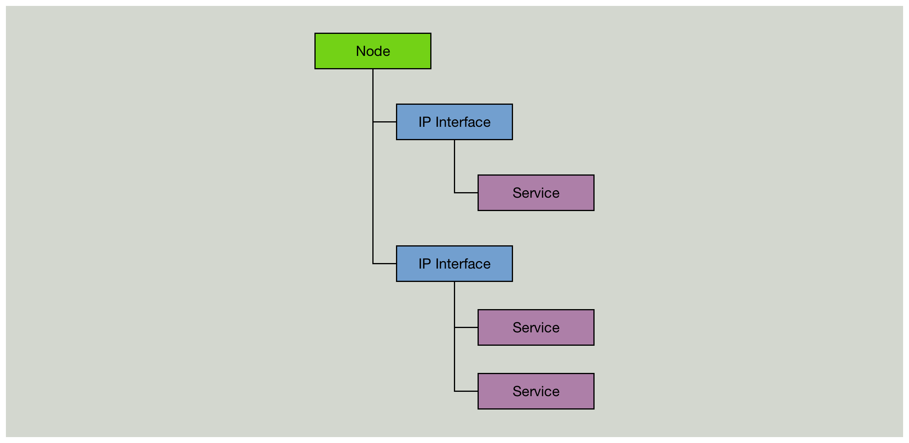
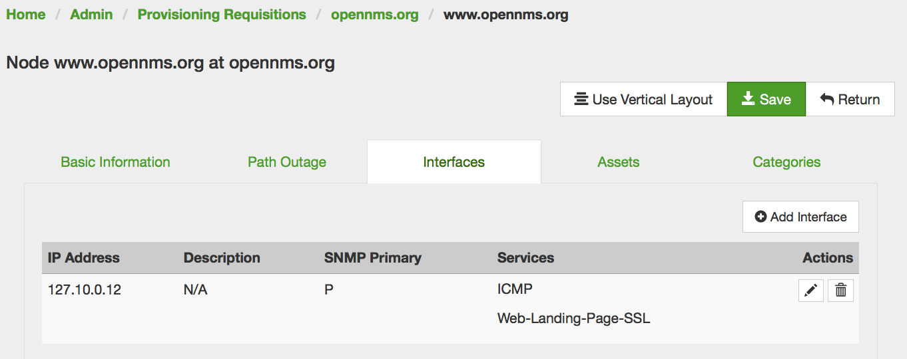

Monitoring Websites with OpenNMS
Monitoring websites is a common requirement. Using OpenNMS to monitor websites can be done by using the built in HTTP/HTTPS based monitors.
While a “Node” can be pretty much everything in a network, the internal model to monitor something is pretty old-fashioned and static. Monitoring a service requires to assign a service to an IP address.

This article describes a pattern how you can monitor web sites with low maintenance and without the need to maintain for each website a monitor which is cumbersome in maintenance.
The Use Case
We want to monitor the websites landing page from https://www.opennms.org.
The landing page is what you get when you type in your browser “https://www.opennms.org/", the important thing is the path / at the end.
Step 1: Use the ${nodelabel} variable
The Page Sequence Monitor allows you to pass the ${nodelabel} into the running monitor.
I’ve called the monitor Web-Landing-Page-SSL.
It’s just a name and you can use a different one as you like, just make sure you provision the correct service name you’ve picked.
Here is the full service definition for the poller-configuration.xml to test the websites entry page:
<service name="Web-Landing-Page-SSL" interval="300000" user-defined="true" status="on">
<parameter key="retry" value="1"/>
<parameter key="timeout" value="5000"/>
<parameter key="rrd-repository" value="/opt/opennms/share/rrd/response"/>
<parameter key="ds-name" value="webLandingSsl"/>
<parameter key="page-sequence">
<page-sequence>
<page path="/"
scheme="https"
port="443"
host="${nodelabel}"
virtual-host="${nodelabel}"
requireIPv4="false"
requireIPv6="false"
disable-ssl-verification="false"
response-range="200-399"/>
</page-sequence>
</parameter>
</service>
<monitor service="Web-Landing-Page-SSL" class-name="org.opennms.netmgt.poller.monitors.PageSequenceMonitor"/>
The basic test parameters are defined in the beginning and are self explaining:
<service name="Web-Landing-Page-SSL" interval="300000" user-defined="true" status="on">
<parameter key="retry" value="1"/>
<parameter key="timeout" value="5000"/>
<parameter key="rrd-repository" value="/opt/opennms/share/rrd/response"/>
<parameter key="ds-name" value="webLandingSsl"/>
When you use RRDTool or JRobin, OpenNMS stores respone time is stored in a file named webLandingSsl{.rrd,.jrb} the directory of the IP interface in {OPENNMS_HOME}/share/rrd/response.
The test for the website itself is defined in the page sequence section.
<page-sequence>
<page path="/"
scheme="https"
port="443"
host="${nodelabel}"
virtual-host="${nodelabel}"
requireIPv4="false"
requireIPv6="false"
disable-ssl-verification="false"
response-range="200-399"/>
</page-sequence>
A HTTP GET request would be like this curl -I https://${nodelabel}/, where the parameter ${nodelabel} is replaced accordingly on which node the service is running.
The HTTP Respose Code should be something between 200-399 to have the service Up, every other response code outside of the range the service goes Down.
For websites you probably want to resolve the host dynamically to an IP address. They can change or use Round Robin DNS so the IP would be always different.
requireIPv4="false"
requireIPv6="false"
This tells the Page Sequence Monitor to not use the IP address where the service is assigned to and make a DNS lookup using the system configuration and run the test against the resolved IP address.
Step 2: Provision a node per website
The tricky question is: “Which IP should I assign to a node, cause it is mandantory?”.
If you run OpenNMS on a Linux system you can pick a unique IP address for each website from the 127/8 loopback IP range.
They will always be reachable and respond to ICMP by the systems local IP stack.

Assign the Web-Page-Landing-SSL monitor to the loopback IP. If you want to have a more detailed error message and not just a nodeDown event in case the website is unavailable, provision the ICMP service on the loopback IP. The ICMP service will always be available and you will get a nodeLostService with a more detailed error message why the Web-Page-Landing-SSL service went down.
Add diagnostic test for DNS resolution
With a similar pattern you can add a test to resolve the websites hostname as additional diagnostic information.
<service name="DNS-Resolution-v4" interval="300000" user-defined="false" status="on">
<parameter key="retry" value="2"/>
<parameter key="timeout" value="2000"/>
<parameter key="resolution-type" value="v4"/>
<parameter key="rrd-repository" value="/opt/opennms/share/rrd/response"/>
<parameter key="rrd-base-name" value="dns-res-v4"/>
<parameter key="ds-name" value="dns-res-v4"/>
</service>
<service name="DNS-Resolution-v6" interval="300000" user-defined="false" status="on">
<parameter key="retry" value="2"/>
<parameter key="timeout" value="2000"/>
<parameter key="resolution-type" value="v6"/>
<parameter key="rrd-repository" value="/opt/opennms/share/rrd/response"/>
<parameter key="rrd-base-name" value="dns-res-v6"/>
<parameter key="ds-name" value="dns-res-v6"/>
</service>
<monitor service="DNS-Resolution-v4" class-name="org.opennms.netmgt.poller.monitors.DNSResolutionMonitor" />
<monitor service="DNS-Resolution-v6" class-name="org.opennms.netmgt.poller.monitors.DNSResolutionMonitor" />
By default the DNSResolution Monitor will use the Node Label as lookup for an A record. The IP interface doesn’t matter, the test will use the system DNS configuration. If you want a more customized DNS test, have a look at the DNSResolutionMonitor documentation.
Happy Monitoring